维空间的概念成为年轻一代优秀数学家的必备知识。”
维空间的概念成为年轻一代优秀数学家的必备知识。”委婉一点儿说，数学小说并不是一个很大或者很突出的文学门类。埃德温·艾勃特（1838—1926）的《平面国：多维空间传奇往事》（Flatland: A Romance of Many Dimensions）是其中极少数持续畅销的作品之一，该书于 1884 年首次出版，至今仍在重印。
《平面国》是以一个自称为“正方形”的生物的口吻讲述的。事实上，他是一个生活在二维世界“平面国”里的正方形。平面国里居住着各种其他生物，他们是拥有不同程度正规性的平面图形：等腰三角形（两条边相等）、等边三角形（三条边全相等）、正方形、五边形和六边形，等等。这里的社会等级制度如下：拥有的边越多，生物的等级就越高，圆的等级最高；女性只是线段，会受到各种社会限制和歧视。
《平面国》的前半部分描述了平面国及其社会的各个阶层。作者用大量篇幅介绍了如何确定一个陌生人在社会中的等级，这是个棘手的问题。因为平面国人的视线是一维的（就像你的视线是二维的一样），他们在视野中看到的对象只有线段，只能通过触摸来确定陌生人的实际形状，然后才能知道其等级。因此，在这个国度，常见的介绍方式是：“请你摸一摸某某阁下。”
在那本书的后半部分，正方形探索了其他世界。在梦里，他参观了直线国，这是一个一维的地方，作者用了 11 页来介绍这个国家。因为直线国人永远无法越过其两端的邻居，所以这个物种的繁衍就成了问题，艾勃特用极大的智慧解决了这个问题。
正方形醒来后，回到了自己的世界——平面国。不久之后，来自三维世界的一个生物——球——造访了这里，球以一种不稳定的方式或多或少地进入平面国。在正方形看来，球是一个神秘的会伸缩的圆。球与正方形进行了一场哲学对话，球向正方形介绍了单点国——一个零维空间，那里只有一个居民：“他自己就是这个世界的全部，除此之外别无其他。然而，你要留意他那自满十足的样子，从中吸取教训，他的这种沾沾自喜既可恨又无知，他所追求的就是盲目无知的幸福。”我想我们都遇到过这个生物。
《平面国》出版时，艾勃特还不到 46 岁。在 1911 年的《大英百科全书》中，介绍他的词条共有 240 个单词，把他描述成一位“英国校长和神学家”，但没有提及《平面国》。受到基督教的个人观点和对维多利亚时代的社会习俗的怀疑的影响，艾勃特实际上是一位怀有改革和进步思想的男校校长。《平面国》间接而温和地讽刺了当时的社会。
自《平面国》出版以来的 100 多年来，该书吸引了无数读者的关注，激发了他们的想象力。事实上，这部作品还有一系列著作和故事作为续集。迪奥尼斯·布格尔的《球国：关于弯曲空间和膨胀宇宙的幻想》（Sphereland: A Fantasy About Curved Spaces and an Expanding Universe）和伊恩·斯图尔特的《二维国内外：数宇漫游奇历记》（Flatterland: Like Flatland, Only More So）都是以艾勃特的原创思想为基础的优秀作品。1984 年，杜德尼在《平面世界：与二维世界的一次亲密接触》（The Planiverse: Computer Contact with a Two-Dimensional World）1 中深入、透彻地研究了二维世界中物理学、化学和生物学的存在性，而在艾勃特的作品中，这类内容很少，而且也不令人信服。虽然文学价值稍低，但也给人留下印象的作品还有鲁迪·拉克（1946— ）的小说《平面国里的消息》（Message Found in a Copy of Flatland），书中的主人公在伦敦的一家巴基斯坦餐厅的地下室中偶然发现了平面国，他最后吃掉了平面国人，这些生物“尝起来有些像水分很多的烟熏鲑鱼”。2
1这是我非常喜欢的一本书。它妙趣横生，富有想象力，值得一读。例如，二维生物会锁门吗？如果它有一条从身体一端到另一端的消化系统，那么是什么让它没有被分成两部分呢？
2这个故事取自《数学航行：数学奇闻大观》（Mathenauts: Tales of Mathematical Wonder）——1987 年由拉克编写的数学科幻故事集。这部合集有 23 个故事，我认为其中一半以上的故事都与四维思想有关，根据我的经验，这大约是数学科幻小说的平均水平。
零维空间、一维空间、二维空间和三维空间，为什么到此就停止了呢？也许，大多数非数学专业人士是从韦尔斯出版于 1895 年的小说《时间机器》（The Time Machine）中第一次听说第四维的，这本小说的主人公是这样说的：
据说，数学家们研究的空间有三个维度，分别是长度、宽度和厚度，这些维度可以由三个平面来决定，每个平面都与其他两个平面成直角。但是一些哲学人士一直在问为什么要特别考虑三个维度？为什么没有另一个与这三个平面都成直角的方向呢？他们甚至去尝试构造一种四维几何。
一种深奥的理论出现后，需要一段时间才能渗入通俗文学作品中，今天也是如此。3 如果 19 世纪八九十年代的文学家们在写关于空间的可能或不可能出现的维数的流行作品，那么我们可以肯定，当时的职业数学家们已经对这样的问题思考几十年了。
3不确定性原理于 1927 年首次提出。对 20 世纪 90 年代的有责任心的小说家来说，如果不提到海森堡的不确定性原理，那么他的小说就是不完整的。
事实确实如此。在 19 世纪的第二个 25 年里，各地的数学家们开始产生关于空间维数的想法。在 19 世纪的第三个 25 年里，这些零散的想法被汇集到一起，伟大的德国数学家菲利克斯·克莱因（1849—1925）得出了下面的后见之明：“1870 年左右， 维空间的概念成为年轻一代优秀数学家的必备知识。”
这些想法从何而来？在 19 世纪初，它们还不见踪影；但到了 19 世纪末，它们已经广为人知，甚至出现在通俗小说中。谁第一个想到了它们？为什么它们会在这个特殊的时间出现？
※※※
在 19 世纪初，成熟的复数概念已经成为基本知识，扎根于数学家们的大脑中。正如本书开头描述的那样，数的现代概念或多或少已经在数学家们的大脑中建立起来了（不过我在前面用到的镂空字母记号是 20 世纪后期才使用的）。
特别是，实数和复数的常见图形表示，即分别用直线上的点和平面上的点来表示，也成为常识。复数的巨大威力，以及它们在解决不同领域的数学问题时的作用也得到了广泛的认可。一旦这一切被人们接受，下面的问题就自然而然地产生了。
如果说从一维实数到二维复数的变化给我们带来了如此巨大的威力和深刻的见解，那为什么要止步于此呢？难道没有其他类型的数正等待着被发现吗？比如超复数，它们的自然表示是三维的吗？还有，难道那些数就不能让我们对数学的理解更加深入吗？
从 18 世纪末最后几年开始，这个问题就已经萦绕在好几位数学家的脑海之中了，这其中当然包括高斯，尽管他没有得出任何值得注意的结果。大约在 1830 年，哈密顿也开始考虑这个问题。
※※※
哈密顿的人生 4 故事读起来令人沮丧。这倒不是说他的生活境遇有外在的不幸，比如受到战争、贫穷或者疾病等带来的困扰；也不是说他患有什么实质性的精神疾病，比如慢性抑郁症；更不是说他在事业上受到忽视或遭受挫败，他在十几岁时就已经出名了。更确切地说，哈密顿的人生走的是下坡路。事实上，他小时候是一个神童，但年轻时的他勉强算是一个天才，中年的他只能算一个才华横溢的人，进入晚年，他成了一个令人讨厌的酒鬼。
4关于哈密顿的文学作品有很多，全面的传记就至少有 3 本。我主要依据 1980 年由托马斯·汉金斯写的传记，同时参考了一些数学杂志、教材和网站。
哈密顿的数学才华是毋庸置疑的。他拥有深刻的数学见解，而且工作得非常努力，将其洞察力发挥到极致来攻克他那个时代最难的问题。直到今天，数学家们还是很尊重他，怀着崇敬之心纪念他。
哈密顿出生于爱尔兰都柏林，父母都是苏格兰人，所以爱尔兰和苏格兰都说他是本地人，但是他自称是爱尔兰人。他是一个神童，少年时一直在学习各种语言，他在 13 岁时宣称自己每年都掌握一门新的语言 5。1823 年秋天，他进入都柏林三一学院，不久之后就脱颖而出，成为著名的学者。大学第一年结束时，他遇到了凯瑟琳·迪士尼 6，并爱上了她。但是凯瑟琳的家人马上就把她嫁给了一个更合适的人。这次失恋毁了哈密顿的人生，可能也毁了凯瑟琳的人生。在 1833 年，哈密顿草率地与一个体弱多病且不善持家的女人结了婚，余生都生活在这样一个凌乱的家庭中。
5在 19 世纪初的英国和美国，这样的说法好像很普遍。《〈圣经〉在西班牙》的作者乔治·博罗比哈密顿大两岁，他同样被认为掌握了很多种语言。安·里德勒博士对博罗的语言技能做了研究，认为他有 51 种语言和方言的阅读能力。在这项研究中，里德勒博士提到了出生于 1793 年的美国作家约翰·尼尔，他是《乔纳森兄弟》的作者。尼尔声称：“我在两三年内熟悉了法语、西班牙语、意大利语、葡萄牙语、德语、瑞典语、丹麦语，除此之外还全面复习了希伯来语、拉丁语、希腊语和撒克逊语等。”诗人朗费罗比哈密顿小一岁半，在 19 岁时就被任命为鲍登学院的现代语教授，这证明他的确掌握了很多现代语言。他在 1826 年到 1829 年间，分别用 9 个月、9 个月、12 个月和 6 个月自学了法语、西班牙语、意大利语和德语，达到了熟练阅读的水平。尽管经过了个人的奋斗和几位优秀教师的不懈努力，但我一门外语也没学会，我对这一切感到困惑。19 世纪初的这种现象一定事出有因。
6人们很自然地会想到凯瑟琳是否与华特·迪士尼有关系。也许他们之间有关系吧，但是我没有找到两者间的任何联系。迪士尼家族是一个有庞大的爱尔兰分支的古老家族。华特是阿伦德尔·伊莱亚斯·迪士尼的后代，阿伦德尔于大约 1803 年出生于爱尔兰。华特是西班牙人的私生子并被迪士尼家族收养的故事只是民间传说。
哈密顿在十几岁时就开始接触数学，很快就掌握了这门学科，并以科学和古典文学课上的最高荣誉从三一学院毕业，这是一项前所未有的成就。在他毕业那年，他提出了“特征函数”，这是哈密顿算子最原始的出处，是现代量子理论的基础。
1827 年，哈密顿被聘为三一学院天文学教授。与那个时代的其他年轻数学家一样，哈密顿被复数的精妙和威力所打动。1833 年，他发表了一篇论文，用纯代数的方法看待复数系，也就是我们如今所说的“一个代数”。哈密顿把复数  写成
写成
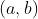
。复数的乘法法则变成：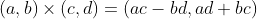
而且，“i 是 -1 的平方根”可以表示成：
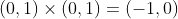
这看起来没什么了不起，但那是因为从哈密顿时代到今天，数学已经发展了大约 200 年。事实上，它改变了人们对复数的理解，19 世纪初的大多数数学家认为复数属于算术和分析的领域，此后复数被认为属于代数领域。简而言之，这是迈向更高层次的抽象化和一般化的又一步。
从 1835 年开始，哈密顿开始了长达 8 年的创造一种与复数类似的三元组代数的探索。从一维实数到二维复数的跨越就让数学如此丰富，再增加一个维数难道不会带来更多新成果吗？
不过，事实证明，从数的三元组中得到一个合适的代数是非常困难的。当然，如果你的条件足够宽松，那么你也能取得一些成果。然而，哈密顿知道他要找的三元组与复数一样有用，它们的加法和乘法必须满足一些相当严格的条件。例如，它们需要满足分配律：如果
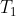
、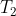
、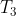
是任意三元组，那么下面的等式成立：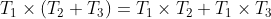
和复数一样，三元组还需要满足模长法则。三元组  的模长是
的模长是
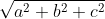
。这个法则是说：如果两个三元组相乘，那么其结果的模长等于它们各自的模长之积。哈密顿一直在思索如何把他的三元组变成一个可行的代数，这个问题大概持续困扰了他 8 年。在此期间，他有了 3 个孩子，而且还获得了爵位。
这个数学难题的解决得益于哈密顿的灵光一闪。他在晚年给次子阿奇博尔德·亨利·哈密顿（1835—1914）的一封信里讲述了这样一个故事：
1843 年 10 月初的每天早晨，当我下楼吃早餐的时候，你的哥哥威廉·埃德温·哈密顿和你总会问我：“爸爸，你能把三元组乘起来吗？”我总是不得不悲伤地摇摇头回答：“还不能，我只能将它们相加减。”
但是在 10 月 16 日，碰巧是星期一，也是爱尔兰皇家科学院的一个会议日，我要去参加并主持会议，你的母亲和我一起沿着皇家运河步行，虽然她时不时地和我交谈，但我一直在下意识思考，这最终产生了一个结果，我立刻觉察到它的重要性。好似电路通了一般，一个火花闪了出来，预示着我在许多年后有了明确的思想和研究方向（正如我立即预见到的那样），如果能在所有事件中幸免，我甚至应该被允许活得足够久来清楚地传达我的发现。当我们经过布鲁姆桥的时候，我无法抗拒自己的冲动（尽管可能不是哲学意义中的冲动），很不理智地立即拿出刀来，用刀子在桥上的一块石头上刻下了符号 i、j、k 的基本公式：
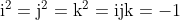
这个公式包含了我思考的问题的解答，当然，我刻下的字早已被侵蚀掉了。
哈密顿于那个星期一在布鲁姆桥 7 上突现的灵感是，三元组不能构成一个有用的代数，但四元组可以。从一维实数  到二维复数 之后的下一步不是三维超复数
到二维复数 之后的下一步不是三维超复数
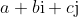
，而是四维超复数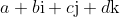
。借助一些简单的 i、j、k 相乘的法则，就是哈密顿刻在布鲁姆桥上的那些法则，这些四元组就能构成一个代数。范德瓦尔登在他的著作《代数学的历史》中称这个灵感为“飞跃到第四维”。7布鲁姆桥位于今天的爱尔兰都柏林工业区，大约在市中心西北 3 英里处。
※※※
为了使这个新代数合理，哈密顿必须违反一个基本算术法则——
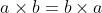
。在第 7 章介绍柯西的置换合成时，我们已经提到，这就是交换性。这个法则 就是交换律。大家在普通算术中非常熟悉：7 乘以 3 的结果与 3 乘以 7 的结果相同。同样，交换律也适用于复数：2-5i 与 -1+8i 相乘的结果和 -1+8i 与 2-5i 相乘的结果相同，二者都等于 38+21i。然而，只有放弃交换律，四元数才能成为一个代数，在四维向量空间中，有一种办法可以将两个向量相乘。例如，在四元数的世界中，i×j 不等于 j×i，而是等于 -j×i。事实上，
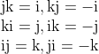
正是由于打破了这个法则，才使得四元数的代数意义值得关注，而哈密顿闪现的灵感也成为数学史上最重要的启示之一。从古代的自然数和分数，到无理数和负数，再到复数和 18 世纪及 19 世纪初伟大数学家们想出的模算术，交换律贯穿数系的所有演变，一直被认为是理所当然的。而今，这里出现了一种似乎可以被认为是数的新数系，它不再满足交换律。用现代术语来说，四元数是第一个非交换可除代数。8
8我们现在知道，高斯早在 1820 年就构想了一个非交换代数，只是不愿费心去发表。若你想有新成果，必须比高斯更用功。
每一个成年人都知道，当你违反了一条规则以后，你很容易就会再违反其他规则。就和日常生活一样，代数学的发展也是如此。事实上，哈密顿在 1843 年 10 月 17 日给他的一位数学界的好友约翰·格雷夫斯（1806—1870）的信中描述了四元数。到了同年 12 月，格雷夫斯已经发现了一个八维代数，这是一个后来被称为八元数 9 的数系。然而为了得到它，格雷夫斯不得不放弃另一个算术法则，即乘法的结合律，也就是
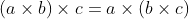
。91845 年，凯莱独立发现了八元数，因此八元数有时候也被称为凯莱数。
我们应该注意到，正是在这个时候，尼古拉·罗巴切夫斯基（1792—1856）和亚诺什·鲍耶（1802—1860）的非欧几里得几何（即“弯曲空间”）开始为人所知（我将在第 13 章中进一步阐述这一点）。康德认为，算术和几何中的法则是人类与生俱来和永恒不变的思维。如果连交换律和结合律这样的基本法则都可以违反，还有什么法则不能违反呢？如果说四元数需要四个维度，谁能说这个世界实际上不是四维的呢？10 或者，生活在二维平面国中的生物也许存在于某个地方吗？
10这个世界是四维的吗？在任何简单的几何意义下，这个世界都不是四维的。这里没有“第四个方向”，你不可能离开我们的三维世界移动到这个方向。如果你真的进入四维世界，你会立刻崩溃，因为即使是最简单的物理定律（比如平方反比定律）被搬到四维欧几里得几何中，都会导致非常糟糕的结果。当然，现代物理学的时空用四维几何描述非常方便，但这种几何本质上不是欧几里得几何，所以你应该从头脑中彻底摒弃带着普通的欧几里得几何观点来看它的想法。不过，人类的想象力是非常奇妙的东西。已故的考克斯特（1907—2002）在他的著作《正多面体》中提到他的朋友约翰·弗林德斯·皮特里：“在精神高度集中的时候，他能够‘看到’复杂的四维图形，从而回答关于它们的问题。”
※※※
尽管哈密顿的洞察力非常出色，但是他的发现只是那个时期前后出现的众多四维想法之一。在 19 世纪 40 年代，第四维、第五维、第六维以及第 维的观点都正在传播。人们常说 19 世纪 90 年代是“紫红色十年”，那么至少在数学家看来，19 世纪 40 年代是“多维的十年”。
同样在 1843 年，英国代数学家阿瑟·凯莱（1821—1895）发表了一篇论文，题目是《 维解析几何》，我们将在第 9 章介绍凯莱。正如这篇论文的题目所说的那样，凯莱谈论的是几何，但是他使用了齐次坐标（我将在“数学基础知识：代数几何”中介绍齐次坐标），这给这篇论文增添了强烈的代数色彩。
事实上，齐次坐标是由德国天文学家和数学家奥古斯特·莫比乌斯（1790—1868）提出的，他在 1827 年就这个主题出版了一本经典著作《重心演算》。莫比乌斯当时似乎就已经知道，四维旋转可以把不规则的三维刚体变换成它的镜像。这有可能是数学思维中四维的源头。
提到莫比乌斯，就不得不说到德国。尽管在这些年里，英国代数学家非常了不起，但是在英吉利海峡对面，当时也已经涌现出很多天才，他们把德国带到了数学界的前列，并使得德国在 19 世纪末期和 20 世纪初期一直保持领先。
※※※
当时，普鲁士的斯德丁（今天波兰的什切青）有一位名叫赫尔曼·格拉斯曼（1809—1877）的中学校长。1843 年，格拉斯曼 34 岁，他从 1831 年起一直在一所高中任教，一辈子都在学校教书。他自学了数学，在大学时研习神学和语言学。后来，他在 40 岁时结婚，有 11 个孩子。
在哈密顿发现四元数的第二年，格拉斯曼出版了一本书名很长的书——《……线性扩张论》，现在通常被称为《扩张论》。在该书中，格拉斯曼提出了 80 年后才众所周知的向量空间理论。他定义了一系列概念，诸如线性相关、线性无关、维数、基、子空间和投影。事实上，他研究得更深入，他给出了向量相乘的方法和表示基变换的方法，因此也就用比哈密顿更一般的方法发明了“代数”这个现代概念。这一切都具有明显的代数风格，强调了这些新数学对象的完全抽象的本质，仅利用对这些代数对象的应用引入了几何观点。
不幸的是，格拉斯曼的书几乎没有得到关注。只有格拉斯曼自己写了一篇评论。事实上，格拉斯曼和阿贝尔、鲁菲尼、伽罗瓦这些可悲的数学家一样，他们的功绩没有被同代人认可。在某种程度上这也是他自己的错。他的著作《扩张论》有着 19 世纪早期的写作风格，夹杂着形而上学，令人难以理解。莫比乌斯形容它“无法阅读”，尽管他试着帮助格拉斯曼，并在 1847 年写了一篇评论，赞扬了格拉斯曼的想法。格拉斯曼尽全力宣传那本书，但是他运气不好，无人理睬。
法国数学家让·克劳德·圣维南（1797—1886）在 1845 年发表了一篇关于向量空间的论文，这是《扩张论》出版后的第二年。他的这篇论文展示了与格拉斯曼类似的想法，不过圣维南与格拉斯曼是独立提出他们的发现的。格拉斯曼读了这篇论文之后，把《扩张论》中的相关段落寄给圣维南。但他不知道圣维南的地址，于是请求法国科学院的柯西转寄。然而，柯西没有这样做。6 年后柯西发表了一篇论文，这篇论文很有可能源自格拉斯曼的著作。后来，格拉斯曼向法国科学院投诉。法国科学院成立了一个 3 人组成的委员会来调查是否出现了剽窃行为，而 3 名成员之一就是柯西自己。最终，委员会没有得出任何定论……
《扩张论》也并非完全不可读。1852 年，哈密顿读了该书，他还在其著作《四元数讲义》的前言中专门为格拉斯曼写了一段话。他赞扬《扩张论》是“原创和杰出的”，但是他强调自己的方法与格拉斯曼的方法截然不同。因此，在格拉斯曼的著作出版 9 年之后，终于有两位严肃的数学家（莫比乌斯和哈密顿）注意到了它。
格拉斯曼尝试重写《扩张论》，使它更易于理解，并于 1862 年自费出版了 300 本书。新版本的前言中有如下一段话，我觉得很感人：
我始终坚信我在这门科学上付出的劳动不会白费，它占据了我生命中最重要的部分，我为之付出了艰苦的努力。我当然知道我给出的这门科学的形式还不完美，它也一定是不完美的。但是，我知道而且有义务在此声明（尽管可能有人会认为我很狂妄），即使这项成果再次被忽视十七年或更长时间，且没有真正融入科学发展之中，但它从遗忘的尘埃中现身的时刻也一定会到来，现在仍在沉睡的想法总有一天会结出硕果。我知道，如果我不能在我的周围聚集一群学者（直到现在，我的期望还是徒劳的），不能用这些思想帮助他们获得丰硕的成果，促使他们进一步发展和丰富它们，那么这种思想或许会以另一种新的形式在将来重现，并与当代的发展相互交融。因为真理是永恒而神圣的。
不过，1862 年新版本的境遇比 1844 年的版本好不了多少。由于幻想破灭，格拉斯曼不再研究数学，而是转向另一项爱好——梵文。他将梵文经典《梨俱吠陀》翻译为德文，附有很长的注释，总共近 3000 页。因为这项成就，他获得了德国图宾根大学授予的荣誉博士头衔。
直接基于格拉斯曼工作的第一项重大数学进步发生在 1878 年，这时他已经去世一年了。当时英国数学家威廉·金登·克利福德（1845—1879）发表了一篇题为《格拉斯曼扩张代数的应用》的论文。克利福德利用格拉斯曼的想法把哈密顿的四元数推广为一系列 维代数。经证明，这些克利福德代数可以应用在 20 世纪的理论物理中。 维空间内的旋转，即旋量的现代理论，就源自它们。
※※※
因此，19 世纪 40 年代诞生了两个全新的数学对象，只是它们那时还没有被人理解，其发明者也还没有给它们起这样的名称：向量空间和代数。即使在发展的初始阶段，这两个想法也为数学研究创造了广阔的新机会。
实际应用中的情况也是如此。彼时正处于电气时代的初期。1843 年，哈密顿闪现出伟大灵感的时候距离法拉第（1791—1867）发现电磁感应只有 12 年。法拉第只有 52 岁，仍然很活跃。在 1845 年，哈密顿发现四元数两年后，法拉第提出了电磁场的概念。他用富有想象力的术语，如“力线”等，来描述这一切，因为他对数学的理解不够，所以他无法严格表述他的想法。法拉第的继任者——著名的詹姆斯·克拉克·麦克斯韦（1831—1879）补充了其中的数学部分，他发现，向量正是他们表达这些新想法所需要的东西。
事实上，我们不难想到，那个时代对于这种新兴的奇妙电学（各种强度的电流流向各个方向）的兴趣是催生向量思想的主要动力之一 11。但这并不是说物理学家很容易接受向量。到 19 世纪末及以后，向量思想有三个思想学派。
11在欧洲大陆有一个相反的观点，法拉第钟爱的“力线”在欧洲没有更古老的“超距作用”观点受欢迎。如果翻阅一下当时的数学文献，包括德国的数学文献，你就会看到这些作者还不知道曲面及空间的定向移动等想法。
向量思想的第一个学派源自哈密顿，他实际上是第一个使用现代意义中的“向量”和“标量”这两个词的人。哈密顿认为，四元数 是由标量部分 和向量部分
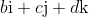
组成的，而且他在此基础上提出了一种处理向量的方法：把向量和标量一起捆绑在四元数里。第二个学派是由美国人乔赛亚·威拉德·吉布斯（1839—1903）和英国人奥利弗·亥维赛（1850—1925）于 19 世纪 80 年代建立的，他们将四元数的标量部分和向量部分分离，把它们作为独立的实体处理，并创建了现代向量分析。最终得到的结果在本质上是格拉斯曼系统，不过吉布斯声称，在他看到格拉斯曼的著作之前，他的想法就已经形成了，而亥维赛似乎根本没有看过格拉斯曼的书。吉布斯和亥维赛都是物理学家，而不是数学家，他们有着纯数学家们反对的那种自命不凡的经验主义观念。他们只是想要对他们有用的代数。如果这意味着要拆分哈密顿的四元数，那么他们不会对这种做法感到后悔。
第三个学派以英国科学家开尔文勋爵（威廉·汤姆森，1824— 1907）为代表，他彻底避开这些新奇的数学，完全采用古老的笛卡儿坐标
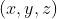
进行研究。这种保守的方法在英国使用了很长时间，对那些顽固的庸俗之辈很有吸引力。在 20 世纪 60 年代，我从一位年长的教师那里学到了动力学，他坚定地站在开尔文阵营，并声称向量“只是一时流行的风尚”。关于这些体系的优劣之争引发了 19 世纪 90 年代有点儿可笑的四元数大战，保罗·纳欣（1940— ）在 1988 年给亥维赛写的传记（见第 9 章）中对这场论战做了很详细的记述。格拉斯曼，或者吉布斯和亥维赛，是最终的胜利者，换句话说，他们是向量的胜利者。把四元数搁置在一旁，采用笛卡儿坐标进行数学物理研究的开尔文方法显得既奇怪又麻烦。
四元数代数从未实现哈密顿对它寄予的厚望，仅仅起到了间接作用。四元数辜负了哈密顿的期望，辜负了他在生命最后 20 年的辛勤工作，它未能开辟一片数学新领域，事实证明，形式化的四元数理论没什么进展，只有几个深奥的高等代数领域对此感兴趣，它仅仅作为群论或矩阵理论课程的简要补充内容被教给本科生 12。
12四元数在量子理论中有一些应用。引用一位给予我帮助的物理学家朋友的一段笔记：“有趣的是，如果用四元数来表示旋转运动，那么得到的 7 阶协变方阵（里卡蒂方程的解）是奇异的，因为欧拉对称参数中的 4 个参数是线性相关的。”正是如此。约翰·康威和德里克·史密斯于 2002 年合著的《四元数和八元数》中对哈密顿的想法给出了非常全面的描述，不过其中的数学很深。印第安纳大学教授安德鲁·汉森有一本名为《可视化四元数》的著作，在 2006 年初出版。我没有看过那本书，但是据说其中讲述了很多四元数在计算机动画中的应用。
※※※
在发现四元数之后， 维空间的研究朝着其他方向发展。19 世纪 50 年代初，瑞士数学家路德维希·施莱夫利（1814—1895）创建了四维空间和更高维空间中的“多面体”的几何，多面体是有平坦侧面的形状，它们是二维多边形和三维多面体的类似物。施莱夫利关于这些主题的论文的法文版和英文版分别发表于 1855 年和 1858 年，这些文章完全被忽视，直到 1895 年施莱夫利去世后才为人所知，比格拉斯曼的《扩张论》的遭遇还悲惨。这项成果应该属于几何领域而不是代数领域。
另一条发展路线起源于 1854 年伯恩哈德·黎曼（1826—1866）重要的特许任教资格（有点儿像第二个博士学位）演讲，其题目是《关于几何基础的假设》。黎曼重新拾起高斯留下的某些想法，完全改变了研究曲线和曲面的几何的视角，比如，他不再将弯曲的二维曲面看成嵌入在平坦的三维空间中的对象，而是通过一个不能离开该曲面表面的生物从内部研究这个曲面。这种“内蕴几何”可以很容易并且很明显地被推广到任意维，促成现代微分几何、张量分析以及广义相对论的诞生。不过，这也不是一个代数话题（等到在第 13 章讨论现代代数几何时，我会再次回到这个主题）。
※※※
抽象向量空间和代数（也就是允许向量以某种方式相乘的向量空间）的理论最终发展成为一个范围广阔的领域，我们今天称之为“线性代数”。一旦将向量乘法从交换律和结合律的束缚中解放出来，各种奇怪的东西就会出现，它们必须被纳入一个更一般的理论之中。
比如，有一些代数存在零因子。实际上，当哈密顿尝试推广他的四元数，使得四元数 的系数 、 、
、 、 不仅仅是实数（正如他最初所认为的那样）而是复数时，他自己也意识到了这一点。例如，在复数域上，我可以做下面的因式分解：
、 不仅仅是实数（正如他最初所认为的那样）而是复数时，他自己也意识到了这一点。例如，在复数域上，我可以做下面的因式分解：
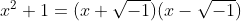
（我在这里写了  ，是为了避免与哈密顿四元数中的 i 混淆，四元数中的 i 与复数中的 i 不完全一样。）如果将哈密顿的 j 代入
，是为了避免与哈密顿四元数中的 i 混淆，四元数中的 i 与复数中的 i 不完全一样。）如果将哈密顿的 j 代入  ，就得到
，就得到
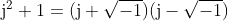
但是，根据哈密顿的定义，
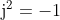
，所以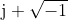
和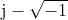
都是零因子。在近世代数中，这种情况并不是唯一的。在第 9 章中，我将要介绍矩阵乘法，当你把两个非零矩阵相乘时，得到的结果可能是一个零矩阵。然而，这个结果的确表明，对抽象代数的研究很快就离开了人们熟悉的实数和复数的世界。列举和分类所有可能的代数是一个很有趣的练习。你的结果取决于你愿意允许什么。最受限的情况是实数域  上的没有零因子的有限维交换结合代数。1864 年，卡尔·魏尔斯特拉斯（1815—1897）证明，这样的代数只有两个： 和
上的没有零因子的有限维交换结合代数。1864 年，卡尔·魏尔斯特拉斯（1815—1897）证明，这样的代数只有两个： 和  。通过不断放宽限制，允许不同基域中的数作为标量，允许零因子等的存在，你就会得到越来越多的代数，其奇异的性质越来越多。1870 年，美国数学家本杰明·皮尔斯（1809—1880）沿着这个方向得到了著名的分类结果。
。通过不断放宽限制，允许不同基域中的数作为标量，允许零因子等的存在，你就会得到越来越多的代数，其奇异的性质越来越多。1870 年，美国数学家本杰明·皮尔斯（1809—1880）沿着这个方向得到了著名的分类结果。
苏格兰代数学家麦克拉根·韦德伯恩（1882—1948）在 1908 年发表了著名论文《论超复数》，把代数进一步推广，允许标量属于任意域……虽然我已经提到了域和矩阵等话题，但是到现在都还没有详细介绍它们，特别是源自古代中国的矩阵，这需要单独一章来介绍。